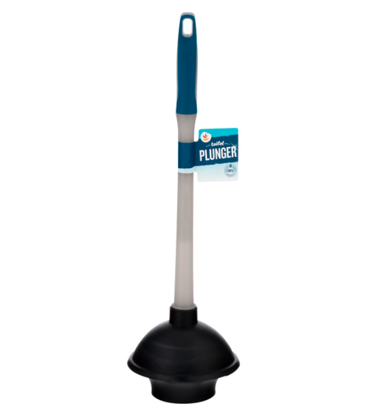

Table of Contents
1. はじめに
アメリカのアパートで生活していると、日本にいたときにはあまり合わないようなトラブルがよく起こります。アメリカのアパートは3件目ですが、どの物件でも窓とトイレのトラブルに悩まされました。今回は昨日遭遇したトイレのトラブルについてです。
2. トイレが詰まった
お風呂上がりに髪の毛をトイレに流したとき、いつもよりトイレの流れが悪いことに気が付きました。あれ、と思って再度流したら、みるみる水位が上昇して1リットルほどタイルに溢れさせてしまいました。今度のアパートでのトイレトラブルは、2ヶ月ほど前にタンクの水がうまく溜まらなくなったことに続いて2回目です。
しばらく待っていると水は少しずつ排出されて、正しい水位まで下がります。ここからならギリギリ溢れさせるに水を流す(英語でflushと言います)ことができます。完全に詰まってしまったわけでは無さそうです。
詰まった原因は、おそらくトイレットペーパーを大量に流しすぎたせいだと思われます。
3. 試行錯誤してみる
ネットで解決方法を調べ、ペットボトルを使う方法とお湯を使う方法を試してみることにしました。もう夜なので、plunger(例の、棒の先にゴムのカップが付いているやつをこう呼びます)を買いに行くこともできません。
3.1. ペットボトル作戦
ペットボトルの底を切り取り、口に親指を突っ込んだままトイレの底で出し入れする方法です。plungerの簡易版とったところでしょうか。ネット情報によるとかなり有望です。
数十回頑張りましたが、全く効きませんでした。ミネラルウオーターを無駄にした、と家族から文句を言われてしまいました。
3.2. お湯作戦
熱湯ではない、50-60度のお湯で詰まったものをふやかす方法です。できるだけ水を汲み出し、そこにお湯を投入して1時間ほど放置します。これとペットボトルを組み合わせれば有望なのでは、と期待しました。しかし、こちらも効果ありませんでした。残念。
4. トイレが2つある意味
これまで住んだアメリカのアパートにはトイレが2つずつ付いていました。一つあればいいのに無駄だなぁ、と思っていましたが、トイレトラブルに遭遇した時には2つ目のトイレがとてもありがたいです。
プロに頼んで解決してもらうと$250(通常)-$700(重度)かかるらしいのですが、唯一のトイレが詰まってしまうと、精神的に追い詰められてつい頼ってしまうところでした。アメリカでは、困っている人の足元を見て吹っかける「準悪徳ビジネス」が多いように感じています。
夜も遅くなってきたので、失意のうちに寝ることにしました。
5. plunger登場
翌朝、もしやと思ってトイレを流してみましたが、解決していませんでした。お湯+ペットボトル作戦も試しましたがだめでした。
仕方なく、plunger探しの買い物に出ることにしました。ドラッグストアのCVSにはおいてありませんでしたが、スーパーマーケットのstop&shopにありました。$9.02でした。これで解決すれば安いもんです。

ランチのパスタを作って食べた後、いよいよ真打ちのplungerを試します。30回ほど気合を入れてキュポキュポした後で水を流したところ、無事にトイレのつまりが解決していました！やりました！感動です！
6. 終わりに
アメリカで生活していると、こういったトラブルによく遭遇します。一つずつ解決して、アメリカでの生活力が付いてきていることに小さな喜びを感じています。